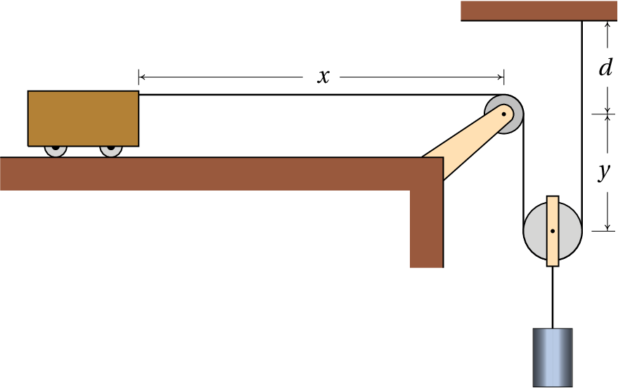

Cada braço num robot costuma ter 3 articulações. Em cada articulação
há dois eixos perpendiculares, que permitem duas rotações
independentes, correspondentes a dois graus de liberdade; assim sendo,
cada braço tem 6 graus de liberdade, o suficiente para poder alcançar
qualquer ponto dentro do seu alcance máximo, em qualquer direção
desejada. O robot ATHLETE (All-Terrain Hex-Legged
Extra-Terrestrial Explorer) na figura, usado pela NASA para
exploração lunar, tem seis braços de 3 articulações e, incluindo os 3
graus de liberdade da posição de um ponto no corpo do robot, são ao
tudo 39 graus de liberdade. O braço humano, sem incluir a mão, tem 7
graus de liberdade: o ombro permite 3 rotações diferentes, o cotovelo
permite duas rotações diferentes e o pulso mais duas rotações.
8.1. Graus de liberdade e espaço de fase
Os sistemas mecânicos considerados no capítulo anterior têm todos um
único grau de liberdade (uma coordenada ou ângulo para determinar a
posição) e duas variáveis de estado: a variável associada a esse grau
de liberdade e a sua derivada em ordem ao tempo (velocidade ou
velocidade angular).
Num sistema com
graus de liberdade, existem
variáveis
independentes dependentes do tempo, chamadas
coordenadas generalizadas,
que serão identificadas pelas letras:
,
, …,
. Essas variáveis podem ser comprimentos, ângulos ou qualquer
outra grandeza. As derivadas em ordem ao tempo de cada uma dessas
variáveis são as velocidades
generalizadas:
.
O espaço de fase tem
dimensões e cada ponto nesse espaço tem
coordenadas (
, …,
,
, …,
). A velocidade de fase, em cada ponto do espaço de fase,
tem
componentes, (
, …,
,
, …,
). Para se poder calcular a
velocidade de fase em qualquer ponto do espaço de fase é necessário
conhecer
expressões para as acelerações generalizadas
, em função das coordenadas e velocidades generalizadas,
expressões essas que são denominadas
equações de movimento.
As equações de movimento poderiam ser obtidas aplicando a segunda lei
de Newton. No entanto, seria necessário relacionar cada aceleração
generalizada
com a aceleração do centro de massa de
alguma parte do sistema e identificar todas as forças externas que
atuam sobre essa parte do sistema. Algumas de essas forças são forças
de ligação, por exemplo, a tensão num fio ou a reação normal numa
superfície. No capítulo anterior viu-se que as equações de evolução
podem ser obtidas também derivando a função hamiltoniana. O problema é
que, em casos mais complicados dos que foram considerados no capítulo
anterior, essa função não é a energia mecânica dividida pela massa ou
pelo momento de inércia, mas pode ter formas mais complicadas. Nas
secções seguintes introduz-se um método mais geral para obter as
equações de movimento sem necessidade de identificar forças de
ligação.
8.2. Equações de Lagrange
A energia cinética total
de um sistema mecânico é igual
à soma de todas as energias cinéticas de translação e de rotação de
todas as partes do sistema. Em geral, é uma função que pode depender
de todas as coordenadas e velocidades generalizadas e do tempo:
(8.1)
Num sistema em que o movimento está sujeito a algumas restrições
existem forças de ligação resultantes dessas restrições. Por exemplo,
num automóvel que se desloca sobre uma estrada, a reação normal da
estrada sobre os pneus é a força de ligação que garante que a
trajetória do automóvel siga a superfície da estrada. O atrito
estático nas rodas com tração é também uma força de ligação, que
garante que as rodas rodem sem deslizar sobre a superfície. A
restrição de que o automóvel se desloque sobre a superfície da estrada
permite reduzir as três coordenadas de posição a um único grau de
liberdade: o deslocamento ao longo da estrada. A restrição de as rodas
rodarem sem derrapar permite relacionar a velocidade angular das rodas
com a velocidade do automóvel na estrada. Essa relação implica também
uma relação entre o ângulo de rotação das rodas e o deslocamento do
automóvel na estrada, o que faz com que apenas umas dessas duas
variáveis seja suficiente para descrever o movimento do automóvel e a
rotação das rodas.
Sempre que uma restrição no movimento de um sistema pode ser escrita
em função das coordenadas generalizadas do sistema, permitindo assim
reduzir o números de graus de liberdade, diz-se que é uma restrição
holonómica. Nos sistemas
holonómicos, sujeitos unicamente
a restrições holonómicas, a segunda lei de Newton conduz às seguintes
equações (a demonstração é feita no
apêndice B):
(8.2)
onde
é a componente
da força generalizada,
definida por
(8.3)
e a soma é feita sobre todas as forças
(internas ou
externas) e
é a posição do ponto onde atua a força
. No entanto, não é necessário considerar algumas das
forças no cálculo de
; por exemplo, as forças de reação normal e
de atrito estático podem ser ignoradas, porque atuam numa posição fixa
e, portanto,
. A
força de tensão num fio com comprimento constante também pode ser
ignorada, porque atua em sentidos opostos nos dois extremos do fio e a
soma de
nos dois extremos dá zero.
Entre as forças que devem ser incluídas em
, algumas podem ser
conservativas e, nesses casos,
, onde
é a energia
potencial associada a essa força. Assim sendo, a contribuição dessa
força conservativa para
é igual a
e
as equações 8.2 podem ser escritas
(8.4)
em que
é a energia potencial total do sistema e as componentes
da força generalizada incluem unicamente as forças não
conservativas. As equações 8.4 são as
equações de Lagrange,
válidas para os sistemas holonómicos. No caso particular de sistemas
conservativos, o lado direito das equações é nulo.
Exemplo 8.1
O carrinho na figura, com massa
, encontra-se sobre o plano
inclinado de massa
. O plano inclinado tem rodas que lhe permitem
deslocar-se livremente sobre a mesa horizontal. Admitindo que a massa
das rodas é muito menor que
e
e que o atrito no eixo das rodas
é desprezável, encontre as equações de movimento do sistema.
Resolução. Para determinar as posições do carrinho e do plano
inclinado num instante, basta saber o deslocamento horizontal
de
um ponto do plano, em relação à mesa e o deslocamento
de um ponto
do carrinho em relação ao plano inclinado. A figura acima mostra a
forma como essas duas variáveis podem ser definidas. Assim sendo, o
sistema tem dois graus de liberdade e as velocidades generalizadas são
e
.
A velocidade generalizada
é também a velocidade do centro de
massa do plano inclinado;
é a velocidade do carrinho em
relação a plano inclinado. Escolhendo um eixo
perpendicular a
e apontando para cima, a forma vetorial da velocidade do plano
inclinado e da velocidade do carrinho em relação ao plano são:
A velocidade do carrinho, em relação à mesa, é igual à soma desses
dois vetores:
e o seu módulo ao quadrado é,
Como a energia cinética de rotação das rodas é desprezável, a energia
cinética total do sistema é:
A energia potencial gravítica do plano inclinado pode ser ignorada
porque permanece constante; como tal, a energia potencial do sistema é
igual à energia potencial gravítica do carrinho:
note-se que a altura do centro de massa do carrinho, em relação à
mesa, é um pouco maior que
, mas a diferença é uma
constante que só acrescenta um valor constante a
, podendo ser
ignorado.
Não existem forças não conservativas (ou melhor, estão a ser
ignoradas); como tal, o lado direito nas equações de
Lagrange 8.4 é zero. Na primeira equação de Lagrange,
relacionada com a coordenada
é necessário calcular as seguintes
derivadas parciais:
e a equação de Lagrange é,
Em relação à coordenada
, as derivadas parciais são
e a equação de Lagrange é
Resolvendo as duas equações de Lagrange para as acelerações
e
, obtêm-se as duas equações de movimento:
As duas acelerações são constantes,
negativa e
positiva; ou seja, o carrinho desce o plano inclinado enquanto este
começa a andar para a direita.
Exemplo 8.2
No sistema da figura, a roldana do meio pode subir e descer e as
outras duas roldanas estão fixas ao teto. As massas das duas roldanas
fixas é
, a massa da roldana móvel é
e as massas dos 3
cilindros são
,
e
(no cilindro do meio,
já
inclui também a massa do suporte que o liga à roldana móvel). As
massas dos fios e o atrito nos eixos das roldanas são desprezáveis e o
fio faz rodar as roldanas sem deslizar sobre elas. Determine o valor
das acelerações dos 3 cilindros.
Resolução. Este exemplo será usado também para mostrar o uso
do Maxima na resolução de problemas de mecânica lagrangiana. Começa-se
por definir as variáveis generalizadas. Para determinar a posição dos
cilindros e da roldana móvel são necessárias 3 distâncias, que podem
ser as três variáveis
,
e
indicadas na figura. As
variáveis
e
são as posições dos centros de massa dos dois
cilindros nos extremos e
é a posição do centro da roldana móvel;
a posição do cilindro do meio é igual a
mais uma constante.
A restrição de que o comprimento do fio seja constante conduz à
seguinte equação:
onde
é uma constante. Essa equação permite substituir
em
função de
e
; como tal, o sistema tem dois graus de
liberdade e as coordenadas generalizadas podem ser
e
. As
velocidades generalizadas são
e
; a
relação entre a velocidade
e as duas velocidades generalizadas
obtém-se derivando a equação anterior, que neste caso é trivial, mas
como em outros casos podem não ser, será calculada aqui usando o
Maxima. As derivadas calculadas pela função
diff são derivadas parciais; para obter a
derivada ordinária da equação anterior em ordem ao tempo, é necessário
indica que a derivada de
é a velocidade generalizada
e de
forma semelhante para
. Já agora podem indicar-se também as
derivadas de
e
, que são as acelerações
e
. O
comando usado no Maxima para indicar a derivada de uma variável é
gradef. Os comandos para definir
e
em função das variáveis generalizadas são
Como o fio não derrapa sobre as roldanas, a velocidade angular de cada
roldana é
, onde
é a velocidade do fio em relação ao
centro da roldana e
é o raio da roldana. Admitindo que cada
roldana seja um cilindro uniforme, o seu momento de inércia em relação
ao eixo é
, onde
é a massa da roldana; assim sendo, a
sua energia cinética de rotação é
A energia cinética total do sistema é:
onde os índices 1, 2 e 3 referem-se aos 3 cilindros e às 3 roldanas
(de esquerda para direita), as massas
, em letras minúsculas, são
as massas dos cilindros e as massas
, em letras maiúsculas, as
massas das roldanas. As velocidades
são as velocidades dos 3
cilindros e as velocidades
são as velocidades do fio em relação
ao centro de cada uma das 3 roldanas. Observe-se que a roldana 2 tem
tanto energia cinética de translação como energia cinética de rotação.
A expressão da energia potencial gravítica do sistema, excluindo
termos constantes, é:
A seguir, substituem-se os valores das massas em termos do parâmetro
e escrevem-se as expressões das energias em ordem a
,
e
as velocidades
e
(observe-se que
,
e
. Isso pode ser feito no Maxima da
forma seguinte:
Note-se que os resultados não dependem do valor de
e as três
acelerações são constantes. O cilindro do lado esquerdo tem aceleração
igual a
, para baixo (porque
é positiva). O cilindro do
meio e a roldana móvel têm aceleração
, para cima. E a
aceleração do terceiro cilindro é
, para cima. Se inicialmente
os 3 cilindros estão em repouso, o cilindro do lado esquerdo começa a
descer e os outros dois cilindros sobem.
8.3. Condições de equilíbrio
Nos dois exemplos resolvidos na secção anterior, os valores obtidos
para as acelerações generalizadas foram constantes. Nos casos mais
gerais, essas acelerações serão expressões que dependem das
coordenadas e velocidades generalizadas e do tempo. A resolução desses
sistemas de equações diferenciais é o objeto de estudo de todos os
seguintes capítulos neste livro.
Antes de resolver as equações de movimento, é possível (e conveniente)
começar por determinar os valores das coordenadas generalizadas para
os quais o sistema estará em equilíbrio. A condição para que exista
equilíbrio cinético é que as acelerações sejam nulas e se as
velocidades também são nulas, o equilíbrio é estático.
Lembre-se que nos sistemas com apenas um grau de liberdade, a
instabilidade dos pontos de equilíbrio determina-se a partir do sinal
da derivada da aceleração, em ordem à coordenada generalizada. O ponto
de equilíbrio é estável quando essa derivada é negativa ou instável
quando for positiva.
Exemplo 8.3
Um motociclista que se desloca com velocidade
, numa curva de raio
, inclina o seu corpo e a moto um ângulo
, em relação à
horizontal, no sentido do centro de curvatura da curva, para evitar
cair para o lado. Determine o valor que deve ter
, em função
de
,
e
, que é a distância entre o ponto de contacto dos
pneus com a estrada, P, e o centro de massa, C, do sistema.
Resolução. Devido à inclinação da moto, os pontos P e C não
se encontram à mesma distância do centro da trajetória curva. Como a
distância desde o ponto P até o centro da trajetória curva é
e a
velocidade de P em relação à estrada é
, a distância desde o ponto
C até o centro da trajetória curva é
e a velocidade
do ponto C é:
na mesma direção da velocidade do ponto P. Mas como o ângulo
pode variar, o ponto C tem também outra componente de velocidade,
, no plano perpendicular à velocidade de P. Como tal,
a energia cinética de translação é
Há também energias cinéticas de rotação, associadas à velocidade
angular
, à velocidade angular das rodas nos seus eixos
e à rotação do sistema todo no plano horizontal, já que o motociclista
entra na curva olhando numa direção e sai olhando para outra direção
diferente. O cálculo dessas energias ultrapassa os objetivos deste
livro introdutório; será considerado o caso em que essas energias
podem ser desprezadas. A energia potencial gravítica do sistema é
As derivadas parciais das energias, em ordem a
e
são
e a equação de movimento é
A altura do centro de massa,
, costuma ser muito menor do que o
raio da curva; assim sendo, a expressão entre parêntesis é
aproximadamente 1 e uma boa aproximação é
Para que exista equilíbrio,
e o ângulo deverá ser:
(8.5)
e a derivada da aceleração generalizada em ordem ao ângulo é:
que é positiva, porque
. Conclui-se que o
equilíbrio é instável.
Exemplo 8.4
Um carrinho desloca-se sobre uma mesa horizontal, com aceleração
constante de valor
. Sobre o carrinho há um poste com um pêndulo
simples de massa
e comprimento
. Determine o valor do ângulo
em que o pêndulo permanece em equilíbrio em relação ao
carrinho. Admita que a massa do fio do pêndulo é desprezável e que o
raio da esfera é muito menor que
.
Resolução. A velocidade do carrinho será sempre horizontal e
com módulo
, onde
é o tempo a partir do instante em que a
velocidade do carrinho era nula. A figura à direita mostra a
velocidade
da esfera, em relação ao carrinho, no caso
em que
é positiva. O módulo de
é igual
a
e usando um sistema de eixos com
na direção e
sentido de
e
na vertical e para cima, as componentes
vetoriais de
e da velocidade do carrinho são:
A velocidade da esfera em relação à mesa é a soma desses
dois vetores
No Maxima, se
for representada pela variável
e
pela variável
, o vetor velocidade da esfera permite
encontrar a expressão da energia cinética da esfera, lembrando que
A seguir, definem-se a energia potencial da esfera e as derivadas da
coordenada e velocidade generalizadas em ordem ao tempo, encontra-se a
equação de Laplace e resolve-se para obter a expressão para a
aceleração angular
que será designada pela variável
.
Existe equilíbrio estático quando a velocidade e a aceleração angular
são ambas nulas,
,
, que conduz à
condição para o ângulo na posição de equilíbrio:
(8.7)
e a derivada da aceleração angular em ordem ao ângulo é
que é negativa, porque no ponto de equilíbrio
está entre 0 e
. Conclui-se que o equilíbrio é estável; o pêndulo pode oscilar
em torno do ângulo
de equilíbrio.
Observe-se que a equação de movimento depende da aceleração do
carrinho mas não da sua velocidade. A observação da posição de
equilíbrio do pêndulo permite medir o valor da aceleração do carrinho,
mas não a sua velocidade.
8.4. Forças dissipativas
Em todos os exemplos das secções anteriores não existiam forças não
conservativas e, assim sendo, a força generalizada era nula. Os
exemplos seguintes mostram casos em que existem forças não
conservativas.
Exemplo 8.5
Um pêndulo simples é formado por um
objeto pequeno de massa
, pendurado de um fio de comprimento
. A
massa do fio é desprezável comparada com
. Determine a equação de
movimento, incluindo a resistência do ar.
Resolução. A força de resistência do ar é proporcional ao
quadrado da velocidade do pêndulo, e na direção oposta a essa
velocidade (ver equação 4.14 do
capitulo 4). Como a
velocidade do pêndulo é igual a
, a expressão para a
força de resistência do ar é:
onde C é uma constante. Fixando a origem no ponto onde o fio está
colado, a posição do ponto onde atua essa força é
e a sua derivada em ordem a
é
onde
é o versor tangente à trajetória circular do
pêndulo, no sentido em que
aumenta. A força generalizada é
As energias cinética e potencial e as suas derivadas são semelhantes
às do último exemplo da secção anterior, substituindo
A equação de Lagrange conduz a
(8.8)
8.5. Forças de ligação
Uma das vantagens da mecânica lagrangiana, em relação à mecânica
vetorial, é não ter que identificar as forças de ligação, as suas
direções e os pontos onde são aplicadas. No entanto, em alguns casos
pode ser necessário ter de calcular essas forças. Por exemplo, quando
existe atrito cinético entre duas superfícies, a força de atrito é
proporcional à força de reação normal, que é uma de forças de ligação.
Existe um método que permite calcular as forças de ligação a partir
das equações de Lagrange. Começa-se por identificar a restrição à qual
está associada a força de ligação e escreve-se na forma
. No caso do exemplo 8.2, a
restrição de que o comprimento do fio é constante,
, é responsável pela aparição da força de tensão
ao longo do fio e faz com que
possa ser substituída em termos de
e
. Assim sendo, para calcular a tensão no fio, faz-se de
conta que as 3 variáveis (
,
,
) são todas coordenadas
generalizadas, aumentando o número de equações de Lagrange para 3,
introduz-se uma função
, chamada multiplicador de Lagrange
e uma condição adicional,
constante, que no caso do
exemplo 8.2 é
.
O passo seguinte consiste em acrescentar um termo
a cada equação de Lagrange, ficando
(8.9)
onde
. O exemplo seguinte mostra como calcular o
multiplicador de Lagrange. Cada termo
é a componente da força de ligação segundo
. No caso do
exemplo 8.2,
,
e
são os valores da tensão do fio sobre cada um dos 3 blocos, que são
diferentes.
Exemplo 8.6
Um bloco de massa
escorrega sobre um plano inclinado de massa
que tem rodas que lhe permitem deslocar-se livremente sobre uma mesa
horizontal, como mostra a figura. O coeficiente de atrito cinético
entre o bloco e o plano inclinado é
. Admitindo que a
massa das rodas é muito menor que
e
e que o atrito no eixo das
rodas é desprezável, encontre as equações de movimento do sistema.
Resolução. Na figura acima já foram indicados também os dois
sistemas de eixos usados a seguir; os eixos
e
estão fixos à
mesa e os eixos
e
deslocam-se com o plano inclinado.
Este exemplo é semelhante ao exemplo 8.1,
mas com uma força não conservativa: atrito cinético entre o bloco e o
plano inclinado. Como a força de atrito cinético é igual a
, onde
é a reação normal entre o bloco e o
plano, é necessário calcular essa reação normal. É necessário então
fazer de conta que o bloco não mantém o contacto com o plano inclinado
e que as duas coordenadas
e
podem variar. Nesse caso existem
assim 3 graus de liberdade:
,
e
e a equação da restrição
que faz com que o bloco esteja sempre em contacto com o plano
inclinado é:
Introduz-se um multiplicador de Lagrange
e as 3 componentes
generalizadas da força de ligação são:
Isso mostra que a força de ligação aponta na direção do eixo
e o
multiplicador de Lagrange é a própria reação normal
entre
o bloco e o plano.
Para determinar as componentes das velocidades em função das
velocidades generalizadas (
,
,
), mostra-se
a seguir um método diferente do que foi usado na resolução do
exemplo 8.1. O vetor posição do centro de massa do plano
inclinado é
e a sua derivada é o vetor velocidade do plano inclinado:
.
A posição do bloco em relação ao centro de massa do plano inclinado é
onde
é o vetor desde o centro de massa do plano
inclinado até a origem do referencial
. A posição do bloco em
relação à mesa é
; como os
versores do referencial
, em relação ao referencial
, são
então a posição do bloco no referencial
é
e derivando obtém-se a velocidade do bloco
Como a energia cinética de rotação das rodas é desprezável, a energia
cinética total do sistema é:
A altura do bloco, em relação à mesa é
e, ignorando os termos constantes, a energia potencial gravítica do
sistema é
Neste caso existe uma força interna que realiza trabalho: a força de
atrito cinético entre o bloco e o plano inclinado. Para calcular as
componentes
da força generalizada há que ter em conta que na
expressão
o vetor
é a posição do bloco em relação ao plano inclinado
, porque a força é interna; usando a expressão dada
acima para
, as 3 derivadas parciais são
,
e
. Como a força de atrito é
, as três componentes da
força generalizada são então
As equações de Lagrange 8.9 para as 3 coordenadas são
Estas 3 equações podem ser resolvidas para encontrar as 2 equações de
movimento para
e
em função de (
,
,
,
) e a força de ligação
. Para
substituir
,
e
em função das coordenadas e
velocidade generalizadas (
,
,
,
) usa-se a
equação da restrição,
= constante, que neste caso é
=
constante e, portanto,
. Eliminando os termos
nas equações de Lagrange e resolvendo para
,
e
obtém-se
(8.10)
onde
. No caso em que o
atrito cinético é desprezado (
),
é igual a
e as equações de movimento são as mesmas que foram
obtidas no exemplo 8.1.
Perguntas
(Para conferir a sua resposta, clique nela.)
Uma barra muito comprida e homogénea, de comprimento
e massa
,
está a cair para o chão. No ponto A o coeficiente de atrito estático é
suficientemente elevado para evitar que o ponto A se desloque enquanto
o ângulo
diminui. Determine a expressão para a energia
cinética da barra, em função da velocidade angular
Numa máquina de Atwood, penduram-se dois blocos nos extremos de um fio
que passa por uma roldana (ver figura); o bloco mais pesado desce com
aceleração constante e o bloco mais leve sobe com o mesmo valor da
aceleração. Desprezando o atrito no eixo da roldana e a resistência do
ar e sabendo que as massas dos blocos são
e
e a roldana
é um disco homogéneo com massa
, determine o valor da aceleração
dos blocos.
A energia cinética de uma partícula em movimento sobre um cilindro de
raio
é
, em que
e
são as coordenadas da posição da partícula no cilindro, e a sua
energia potencial é
, onde
,
e
são constantes. Determine a aceleração
.
As expressões para as energias cinética e potencial de um sistema com
dois graus de liberdade,
e
, são:
e
. Encontre a
expressão para a aceleração
.
As energias cinética e potencial gravítica de um corpo celeste em
órbita à volta do Sol são dadas pelas expressões
onde
é a massa do corpo,
a distância do Sol ao corpo,
um ângulo medido no plano da órbita com vértice no Sol, as distâncias
estão a ser medidas em unidades astronômicas e o tempo em
anos. Encontre a equação de movimento para
Problemas
No exemplo 8.1, se as massas são
kg e
kg e
o ângulo é
, (a) determine os valores da
aceleração do plano inclinado e do carrinho em relação ao plano
inclinado. (b) Se num instante inicial o plano inclinado e o
carrinho estão em repouso, com
cm, calcule o valor da
velocidade, relativa ao plano inclinado, com que o carrinho chega à
base do plano inclinado (
e o tempo que demora. (c) Na
alínea anterior, calcule o valor da velocidade do plano inclinado
quando o carrinho chega à base do plano inclinado.
Cola-se um extremo de um fio num ponto P de uma roldana, enrolando-o e
pendurando um bloco de massa
no outro extremo. O sistema tem um
único grau de liberdade, que pode ser a altura
que o bloco
desce. Admita que a roldana é um disco homogéneo com massa igual à
massa do bloco e que a massa do fio, a força de atrito cinético no
eixo da roldana e a resistência do ar são desprezáveis. (a)
Encontre o valor da aceleração do bloco, em relação à aceleração da
gravidade. (b) Se o bloco parte do repouso, determine o valor
da sua velocidade após ter descido 50 cm.
Uma particula com massa
= 2 kg desloca-se sobre uma calha
parabólica vertical com equação
, onde
é medida na
horizontal e
na vertical (ambas em metros). Como tal, o
movimento da partícula tem apenas um grau de liberdade, que pode ser
escolhido como a coordenada
.
(a) Escreva a equação da energia cinética em função de
.
(b) Escreva a equação da energia potencial gravítica em função
de
(use o valor
m/s2).
(c) Admitindo que sobre a partícula não atua nenhuma força não
conservativa, use a equação de Lagrange para encontrar a sua equação
de movimento.
(d) Encontre os pontos de equilíbrio do sistema no espaço de
fase, e determine se são estáveis ou instáveis.
O cilindro A na figura tem massa de 36 gramas, o cilindro B tem
massa de 24 gramas e o momento de inércia da roldana dupla é
4.43×10−7 kg·m2. A roldana está formada por dois
discos, de raios 5 cm e 8 cm, colados um ao outro. Cada cilindro
está ligado a um fio com o extremo oposto ligado à roldana, de forma
que o fio enrola-se ou desenrola-se, sem deslizar sobre a roldana,
quando esta roda. (a) Desprezando o atrito no eixo da roldana e a
resistência do ar, determine os valores das acelerações de cada
cilindro e diga se são para cima ou para baixo. (b) Determine
os valores das tensões nos dois fios.
No sistema representado na figura, a massa das rodas e da roldana e
o atrito nos seus eixos podem ser desprezados. (a) Determine
as expressões para as energias cinética e potencial do sistema, em
função do ângulo
e do deslocamento horizontal
do
carrinho. (b) Determine as expressões da aceleração do
carrinho e da aceleração angular
. (c)
Encontre o valor do ângulo
na posição de equilíbrio do
pêndulo e diga se o equilíbrio é estável ou instável. (d)
Determine o valor da aceleração do carrinho, no caso em que o
pêndulo permaneça na posição de equilíbrio.
A roldana fixa no sistema da figura tem massa
e a roldana móvel
tem massa
(ambas podem ser consideradas discos uniformes). A
massa do carrinho é
e a massa do cilindro mais o suporte
que o liga à roldana móvel é
. Admita que a massa do fio e
das rodas do carrinho, a força de atrito cinético nos eixos das
roldanas e das rodas do carrinho e a resistência do ar são
desprezáveis.
(a) Mostre que, em função da altura
que o cilindro desce,
as energias cinética e potencial do sistema são
(b) Determine o valor das acelerações do cilindro e do carrinho.

Um bloco de massa
desce um plano inclinado que faz um ângulo
com a horizontal. O coeficiente de atrito cinético entre o
bloco e plano inclinado é
. Usando a equação de
Lagrange com um multiplicador, encontre as expressões para a reação
normal do plano sobre o bloco e da aceleração do bloco,
(despreze a resistência do ar).
A barra na figura é homogénea, com massa
e comprimento
m
e está apoiada no chão no ponto A e numa parede no ponto B. No
instante inicial, a barra é colocada em repouso, com ângulo inicial
. Se o chão e a parede forem muito lisos, as forças
de atrito nos pontos A e B são desprezáveis e a barra desce até que
o ângulo
diminui até 0. Admita que os pontos A e B
permanecem sempre em contacto com o chão e a parede, que a
resistência do ar é desprezável e que a grossura da barra é muito
menor que o seu comprimento.
(a) Demonstre que em qualquer instante o valor da velocidade do
centro de massa da barra é igual a
(b) Encontre a expressão da energia cinética em função do
ângulo
.
(c) Encontre a expressão da energia potencial gravítica em
função do ângulo
.
(d) Encontre a expressão da aceleração angular.
(e) Encontre a expressão da velocidade angular.
(f) O tempo que a barra demora a cair até o chão é o integral
.
Usando a expressão para
obtida na alínea anterior,
calcule esse tempo. (O integral é impróprio e não pode ser calculado
analiticamente, mas pode ser calculado numericamente, usando a
função quad_qags do Maxima.)
Num pêndulo simples, composto por um objeto pequeno de massa
pendurado por um fio de massa desprezável e comprimento
, o ponto
onde o fio está fixo desloca-se para cima e para baixo segundo a
expressão
, onde
e
são duas constantes.
(a) Ignorando a resistência do ar, determine as expressões para
as energias cinética e potencial em função do angulo
que o
pêndulo faz com a vertical.
(b) Determine a equação de movimento para
.
(c) Diga para que valores das constantes
e
o ponto
de equilíbrio
é estável ou instável.
O saltador na figura encolhe o corpo no ponto P, para rodar mais
rapidamente, e estende-o novamente em Q, para reduzir a rotação na
entrada para a água. As alterações da velocidade angular são
consequência da alteração do momento de inércia.
(a) Se o momento de inércia do saltador em relação ao centro de
massa é
, que depende do tempo, escreva as expressões para as suas
energias cinética e potencial em função da posição (
,
) do
centro de massa e do ângulo de rotação
.
(b) Usando a equação de Lagrange para
, demonstre que o
momento angular,
,
permanece constante.
(c) Se no ponto P mais alto da trajetória o momento de inércia
é 3.28 kg·m2 e a velocidade angular
s−1 e
no ponto Q o momento de inércia é 28.2 kg·m2, determine a
velocidade angular do saltador no ponto Q.
A energia potencial gravítica de um corpo celeste de massa
, em
órbita à volta de outro corpo de massa
, é dada pela expressão
(ver problema 2 do capítulo 6):
onde
é a
constante de gravitação universal
e
a distância entre os dois corpos. Pode demonstrar-se que as
possíveis órbitas do corpo celeste são sempre planas; como tal, o
movimento orbital tem dois graus de liberdade que podem ser
e um
ângulo
medido no plano da órbita, com vértice no corpo de
massa
. Nesse sistema de coordenadas polares, o quadrado da
velocidade do corpo de massa
é (
).
(a) A partir da equação de Lagrange para
, demonstre que o
momento angular
do corpo de massa
, em relação ao corpo de massa
, permanece
constante.
(b) Encontre a equação de movimento para
e mostre
que depende unicamente de
e
e não de
nem de
.
Respostas
Perguntas:1. B. 2. E. 3. B. 4. C. 5. C.
Problemas
(a)
m/s2 e
m/s2
(b)
m/s,
s.
(c)
m/s.
(a)
(b) 2.56 m/s.
(a)
(b)
(c)
(d) Existe um único ponto de equilíbrio, na origem, que é estável.
(a)
m·s−2, para cima,
m·s−2, para baixo. (b) A tensão no
fio ligado ao cilindro A é 0.362 N e a tensão no fio ligado ao
cilindro B é 0.226 N.
(a) Em unidades SI,
(b)
(c) 9.37°, estável. (d) 1.617 m/s2.
(b) Cilindro:
m/s2. Carrinho :
m/s2.
,
(a) A posição do centro de massa é
e a velocidade do centro de massa é a derivada dessa expressão.
Substituindo
e
obtém-se o resultado.
(b)
(c)
(d )
(e)
(f ) 0.3977 s.
(a) Energia cinética:
Energia potencial:
(b)
(c) Se
, o equilíbrio é estável, caso contrário, o
equilíbrio é instável.
(a) A equação de Lagrange é:
,
que implica
constante.
(b)
, onde
,
,
e
são constantes.
Pergunta 1, resposta A: Errada
A distância desde o centro de massa da barra até o ponto A é
. O
momento de inércia em relação a A, calcula-se somando o momento de
inércia em relação ao centro de massa, mais
vezes a distância
desde o centro de massa até A (teorema dos eixos paralelos).
(clique para continuar)
Pergunta 1, resposta B: Certa
(clique para continuar)
Pergunta 1, resposta C: Errada
A distância desde o centro de massa da barra até o ponto A é
. O
momento de inércia em relação a A, calcula-se somando o momento de
inércia em relação ao centro de massa, mais
vezes a distância
desde o centro de massa até A (teorema dos eixos paralelos).
(clique para continuar)
Pergunta 1, resposta D: Errada
A distância desde o centro de massa da barra até o ponto A é
. O
momento de inércia em relação a A, calcula-se somando o momento de
inércia em relação ao centro de massa, mais
vezes a distância
desde o centro de massa até A (teorema dos eixos paralelos).
(clique para continuar)
Pergunta 1, resposta E: Errada
A distância desde o centro de massa da barra até o ponto A é
. O
momento de inércia em relação a A, calcula-se somando o momento de
inércia em relação ao centro de massa, mais
vezes a distância
desde o centro de massa até A (teorema dos eixos paralelos).
(clique para continuar)
Pergunta 2, resposta A: Errada
O sistema tem um grado de liberdade: altura
dum dos blocos, e uma
velocidade:
. Encontre a expressão da energia cinética
total (dos dois blocos mais a energia de rotação da roldana), em
função de
, a expressão da energia potencial gravítica em função
de
(observe que as alturas dos blocos são
e constante
) e
aplique a equação de Lagrange para encontrar a aceleração
.
(clique para continuar)
Pergunta 2, resposta B: Errada
O sistema tem um grado de liberdade: altura
dum dos blocos, e uma
velocidade:
. Encontre a expressão da energia cinética
total (dos dois blocos mais a energia de rotação da roldana), em
função de
, a expressão da energia potencial gravítica em função
de
(observe que as alturas dos blocos são
e constante
) e
aplique a equação de Lagrange para encontrar a aceleração
.
(clique para continuar)
Pergunta 2, resposta C: Errada
O sistema tem um grado de liberdade: altura
dum dos blocos, e uma
velocidade:
. Encontre a expressão da energia cinética
total (dos dois blocos mais a energia de rotação da roldana), em
função de
, a expressão da energia potencial gravítica em função
de
(observe que as alturas dos blocos são
e constante
) e
aplique a equação de Lagrange para encontrar a aceleração
.
(clique para continuar)
Pergunta 2, resposta D: Errada
O sistema tem um grado de liberdade: altura
dum dos blocos, e uma
velocidade:
. Encontre a expressão da energia cinética
total (dos dois blocos mais a energia de rotação da roldana), em
função de
, a expressão da energia potencial gravítica em função
de
(observe que as alturas dos blocos são
e constante
) e
aplique a equação de Lagrange para encontrar a aceleração
.
(clique para continuar)
Pergunta 2, resposta E: Certa
(clique para continuar)
Pergunta 3, resposta A: Errada
Para encontrar a equação de movimento para
, usa-se a
equação de Lagrange:
(clique para continuar)
Pergunta 3, resposta B: Certa
(clique para continuar)
Pergunta 3, resposta C: Errada
Para encontrar a equação de movimento para
, usa-se a
equação de Lagrange:
(clique para continuar)
Pergunta 3, resposta D: Errada
Para encontrar a equação de movimento para
, usa-se a
equação de Lagrange:
(clique para continuar)
Pergunta 3, resposta E: Errada
Para encontrar a equação de movimento para
, usa-se a
equação de Lagrange:
(clique para continuar)
Pergunta 4, resposta A: Errada
Para encontrar a equação de movimento para
, usa-se a
equação de Lagrange:
(clique para continuar)
Pergunta 4, resposta B: Errada
Para encontrar a equação de movimento para
, usa-se a
equação de Lagrange:
(clique para continuar)
Pergunta 4, resposta C: Certa
(clique para continuar)
Pergunta 4, resposta D: Errada
Para encontrar a equação de movimento para
, usa-se a
equação de Lagrange:
(clique para continuar)
Pergunta 4, resposta E: Errada
Para encontrar a equação de movimento para
, usa-se a
equação de Lagrange:
(clique para continuar)
Pergunta 5, resposta A: Errada
Para encontrar a equação de movimento para
, usa-se a
equação de Lagrange:
(clique para continuar)
Pergunta 5, resposta B: Errada
Para encontrar a equação de movimento para
, usa-se a
equação de Lagrange:
(clique para continuar)
Pergunta 5, resposta C: Certa
(clique para continuar)
Pergunta 5, resposta D: Errada
Para encontrar a equação de movimento para
, usa-se a
equação de Lagrange:
(clique para continuar)
Pergunta 5, resposta E: Errada
Para encontrar a equação de movimento para
, usa-se a
equação de Lagrange:


A distância desde o centro de massa da barra até o ponto A é . O momento de inércia em relação a A, calcula-se somando o momento de inércia em relação ao centro de massa, mais vezes a distância desde o centro de massa até A (teorema dos eixos paralelos).
(clique para continuar)